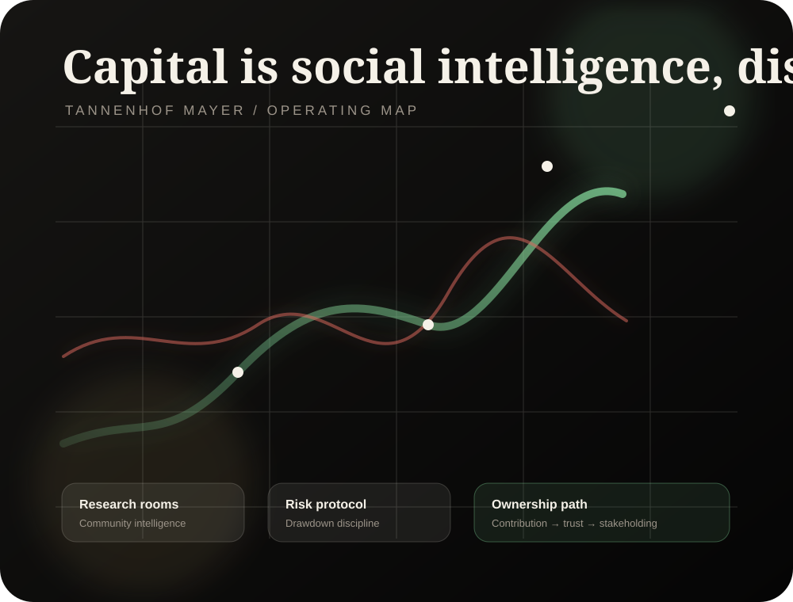

Find signal
Turn community research into structured, reviewable investment intelligence.
Tannenhof Mayer is a serious pre-launch investment house: research-led, community-built, disciplined by risk, and designed for long-term shared ownership.
Thesis
Tannenhof Mayer starts with one question: what happens when serious investors, builders, analysts, and curious operators gather before the firm is fully formed—and help shape it?
Turn community research into structured, reviewable investment intelligence.
Make decisions visible, documented, and open to challenge.
Create a path toward shared ownership for the people who raise the standard.
All graph data below is illustrative and runs directly in the browser. Replace it with live firm data when ready.
Strategy
The first version of the firm is not a fund. It is an operating discipline: a research room, a risk room, and a community ownership roadmap.
Durable businesses with high returns on invested capital, resilient balance sheets, and credible reinvestment runways.
Moments where forced selling, misunderstanding, or short-term fear creates a spread between price and intrinsic value.
Small, asymmetric positions in technologies, protocols, and markets where informed communities can see change earlier.
A defensive reserve designed to preserve optionality and keep the firm rational when markets punish emotion.
We are looking for people who can think, write, challenge, build, and stay calm. Analysts, operators, engineers, allocators, founders, students—anyone with exceptional curiosity and discipline.

The Discord is where the community begins: research rooms, introductions, thesis reviews, and the first operating rituals of Tannenhof Mayer.